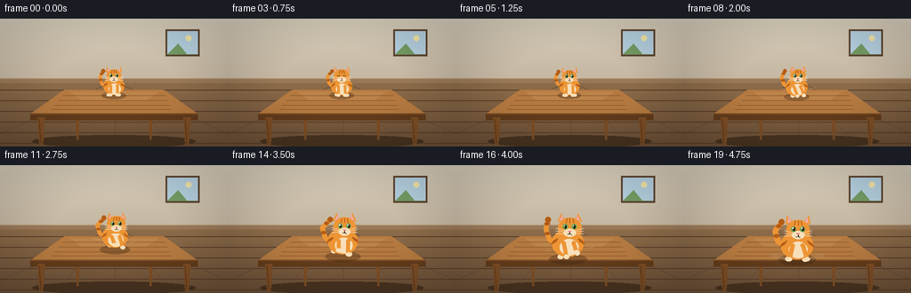
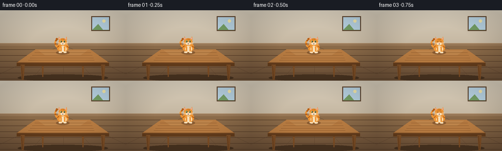

CODING AGENTS AS PIXEL WORLD MODELS
traex/Seed-2.1-Pro-0915 · dynamic_spatial_relationship_0012
点击播放 · 原生 RGB 像素
逐轮保存的候选
回放视频、检查图与代码变化。
每份候选均可单独播放。实际图片检查记录在下方工具轨迹中。
候选 01播放与检查图
点击播放 · 原生 RGB 像素


展开代码变化
--- 上一保存版本
+++ 本次保存版本
@@ -0,0 +1,391 @@
+"""Procedural t2v generator: a cat on a table runs to the front of the table.
+
+Renders 20 RGB frames at 256x144 (4 fps). The scene is drawn at 2x and
+downsampled for smooth edges; no external assets or models are used.
+"""
+import math
+
+import numpy as np
+from PIL import Image, ImageDraw, ImageEnhance
+
+import artifact_io
+
+W, H, N, FPS = 256, 144, 20, 4.0
+SS = 2 # supersample factor
+
+# Palette
+WALL_TOP = np.array([216, 207, 190], dtype=np.float32)
+WALL_BOT = np.array([197, 184, 163], dtype=np.float32)
+FLOOR_TOP = np.array([140, 110, 78], dtype=np.float32)
+FLOOR_BOT = np.array([106, 80, 56], dtype=np.float32)
+BASEBOARD = (151, 121, 90)
+
+WOOD_TOP = (186, 132, 78)
+WOOD = (178, 122, 68)
+WOOD_DARK = (122, 78, 40)
+WOOD_EDGE = (96, 60, 30)
+
+CAT = (233, 150, 60)
+CAT_DARK = (201, 112, 36)
+CAT_STRIPE = (176, 94, 28)
+CREAM = (246, 224, 188)
+EAR_INNER = (236, 172, 172)
+EYE = (112, 166, 92)
+BLACK = (40, 28, 20)
+NOSE = (222, 122, 132)
+WHISKER = (245, 235, 220)
+
+
+def smoothstep(p):
+ p = max(0.0, min(1.0, p))
+ return p * p * (3 - 2 * p)
+
+
+class Pen:
+ """Scaled drawing helpers: coordinates are final-resolution pixels."""
+
+ def __init__(self, draw):
+ self.d = draw
+
+ def _box(self, cx, cy, rx, ry):
+ return [(cx - rx) * SS, (cy - ry) * SS,
+ (cx + rx) * SS, (cy + ry) * SS]
+
+ def ellipse(self, cx, cy, rx, ry, fill):
+ self.d.ellipse(self._box(cx, cy, rx, ry), fill=fill)
+
+ def polygon(self, pts, fill):
+ self.d.polygon([(x * SS, y * SS) for x, y in pts], fill=fill)
+
+ def rect(self, x0, y0, x1, y1, fill):
+ self.d.rectangle([x0 * SS, y0 * SS, x1 * SS, y1 * SS], fill=fill)
+
+ def line(self, pts, fill, width=1.0):
+ self.d.line([(x * SS, y * SS) for x, y in pts], fill=fill,
+ width=max(1, int(round(width * SS))), joint="curve")
+
+ def thick_round_line(self, p0, p1, width, fill):
+ """Line with round caps."""
+ self.line([p0, p1], fill, width)
+ r = width / 2.0
+ self.ellipse(p0[0], p0[1], r, r, fill)
+ self.ellipse(p1[0], p1[1], r, r, fill)
+
+
+def make_background():
+ """Wall + floor gradient with planks, baseboard and a picture frame."""
+ bg = np.zeros((H, W, 3), dtype=np.float32)
+ horizon = 70
+ for y in range(H):
+ if y < horizon:
+ t = y / horizon
+ bg[y, :] = WALL_TOP * (1 - t) + WALL_BOT * t
+ else:
+ t = (y - horizon) / (H - horizon)
+ bg[y, :] = FLOOR_TOP * (1 - t) + FLOOR_BOT * t
+ img = Image.fromarray(bg.astype(np.uint8)).resize((W * SS, H * SS),
+ Image.Resampling.BILINEAR)
+ pen = Pen(ImageDraw.Draw(img))
+
+ # Baseboard
+ pen.rect(0, horizon - 3, W, horizon + 2, BASEBOARD)
+ pen.line([(0, horizon - 3), (W, horizon - 3)], (178, 150, 118), 1)
+
+ # Floor planks: horizontal seams
+ for y in range(horizon + 10, H, 12):
+ pen.line([(0, y), (W, y)], (86, 62, 42), 0.8)
+ # Floor planks: lines converging toward the vanishing point
+ vp = (W / 2, horizon)
+ for bx in (-30, 60, 130, 196, 286):
+ pen.line([vp, (bx, H)], (92, 68, 46), 0.7)
+
+ # Picture frame on the wall
+ fx0, fy0, fx1, fy1 = 188, 14, 222, 40
+ pen.rect(fx0 - 2, fy0 - 2, fx1 + 2, fy1 + 2, (92, 70, 50))
+ pen.rect(fx0, fy0, fx1, fy1, (182, 206, 220))
+ pen.polygon([(fx0, fy1), (fx0 + 12, fy0 + 14), (fx0 + 22, fy1),
+ (fx1, fy1)], (116, 154, 102))
+ pen.ellipse(fx0 + 24, fy0 + 8, 3.2, 3.2, (238, 226, 170))
+ return img
+
+
+# Table geometry (final-resolution coordinates)
+TBL_BACK_L, TBL_BACK_R, TBL_BACK_Y = 72, 184, 80
+TBL_FRONT_L, TBL_FRONT_R, TBL_FRONT_Y = 34, 222, 107
+TBL_APRON_Y = 114
+
+
+def draw_table(img):
+ pen = Pen(ImageDraw.Draw(img))
+
+ # Floor shadow under the table
+ pen.ellipse(128, 138, 92, 7, (72, 52, 34))
+
+ # Back legs (partly hidden by the tabletop, drawn first)
+ for x0, x1 in ((84, 90), (166, 172)):
+ pen.polygon([(x0, TBL_BACK_Y + 3), (x1, TBL_BACK_Y + 3),
+ (x1 - 2, 136), (x0 + 2, 136)], WOOD_DARK)
+
+ # Tabletop (perspective trapezoid)
+ top = [(TBL_BACK_L, TBL_BACK_Y), (TBL_BACK_R, TBL_BACK_Y),
+ (TBL_FRONT_R, TBL_FRONT_Y), (TBL_FRONT_L, TBL_FRONT_Y)]
+ pen.polygon(top, WOOD)
+ # Subtle lighter sheen toward the back
+ pen.polygon([(TBL_BACK_L + 6, TBL_BACK_Y + 2),
+ (TBL_BACK_R - 6, TBL_BACK_Y + 2),
+ (TBL_BACK_R - 20, TBL_BACK_Y + 12),
+ (TBL_BACK_L + 20, TBL_BACK_Y + 12)], WOOD_TOP)
+ # Wood grain streaks kept inside the trapezoid
+ for k, frac in enumerate((0.25, 0.45, 0.65, 0.82)):
+ yl = TBL_BACK_Y + (TBL_FRONT_Y - TBL_BACK_Y) * frac
+ xl = TBL_BACK_L + (TBL_FRONT_L - TBL_BACK_L) * frac + 8
+ xr = TBL_BACK_R + (TBL_FRONT_R - TBL_BACK_R) * frac - 8
+ pen.line([(xl + k * 3, yl), (xr - k * 5, yl)], WOOD_DARK, 0.7)
+ # Front apron (table thickness)
+ pen.polygon([(TBL_FRONT_L, TBL_FRONT_Y), (TBL_FRONT_R, TBL_FRONT_Y),
+ (TBL_FRONT_R, TBL_APRON_Y), (TBL_FRONT_L, TBL_APRON_Y)],
+ WOOD_EDGE)
+ pen.line([(TBL_FRONT_L, TBL_FRONT_Y), (TBL_FRONT_R, TBL_FRONT_Y)],
+ WOOD_DARK, 1.4)
+
+ # Front legs
+ for x0, x1 in ((42, 50), (206, 214)):
+ pen.polygon([(x0, TBL_FRONT_Y + 4), (x1, TBL_FRONT_Y + 4),
+ (x1 - 2, 142), (x0 + 2, 142)], WOOD_DARK)
+ pen.line([(x0 + 1.5, TBL_FRONT_Y + 6), (x0 + 3.5, 140)],
+ WOOD_EDGE, 0.8)
+
+
+def draw_shadow(img, cx, feet_y, s):
+ """Contact shadow of the cat on the tabletop."""
+ layer = Image.new("RGBA", (W * SS, H * SS), (0, 0, 0, 0))
+ pen = Pen(ImageDraw.Draw(layer))
+ pen.ellipse(cx, feet_y + 1.5, 17 * s, 5 * s, (60, 36, 18, 90))
+ img.alpha_composite(layer)
+
+
+def draw_cat(img, cx, cy, s, phase, mode, blink):
+ """Draw a front/three-quarter view cat centered at (cx, cy), body scale s.
+
+ mode: 'idle' | 'run' | 'brake'; phase drives the leg/tail cycle.
+ """
+ layer = Image.new("RGBA", (W * SS, H * SS), (0, 0, 0, 0))
+ d = ImageDraw.Draw(layer)
+ pen = Pen(d)
+
+ running = mode == "run"
+ braking = mode == "brake"
+ bob = (-2.2 * abs(math.sin(phase)) * s) if running else \
+ (0.5 * math.sin(phase * 0.5) * s)
+ cy += bob
+ lean = (1.6 * s) if running else (0.8 * s if braking else 0.0)
+
+ # ---- Tail (raised, swaying, ringed) ----
+ sway = math.sin(phase) * (3.2 if running else 1.8) * s
+ tail = [(cx - 9 * s, cy + 3 * s),
+ (cx - 17 * s, cy - 2 * s),
+ (cx - 20 * s, cy - 12 * s),
+ (cx - 15 * s + sway, cy - 20 * s)]
+ pen.line(tail, CAT, 4.6 * s)
+ pen.ellipse(tail[0][0], tail[0][1], 2.3 * s, 2.3 * s, CAT)
+ tip = tail[-1]
+ pen.ellipse(tip[0], tip[1], 2.6 * s, 2.6 * s, CAT_STRIPE)
+ # Tail rings
+ for idx in (1, 2):
+ a = tail[idx]
+ b = tail[idx + 1]
+ rx = a[0] * 0.45 + b[0] * 0.55
+ ry = a[1] * 0.45 + b[1] * 0.55
+ pen.ellipse(rx, ry, 2.5 * s, 1.5 * s, CAT_STRIPE)
+
+ # ---- Back legs (opposite phase to the front legs) ----
+ for side in (-1, 1):
+ ph = phase + (math.pi if side > 0 else 0.0)
+ lift = max(0.0, math.sin(ph)) * (3.4 if running else 0.6) * s
+ reach = math.cos(ph) * (2.2 if running else 0.4) * s
+ hip = (cx + side * 7.5 * s, cy + 5 * s)
+ paw = (hip[0] + side * reach, cy + 13.5 * s - lift)
+ pen.thick_round_line(hip, paw, 4.2 * s, CAT_DARK)
+ pen.ellipse(paw[0], paw[1], 2.6 * s, 2.0 * s, CREAM)
+
+ # ---- Body ----
+ pen.ellipse(cx, cy + 1 * s, 14.5 * s, 12.5 * s, CAT)
+ pen.ellipse(cx + 1 * s, cy + 5 * s, 8.5 * s, 7.5 * s, CREAM)
+ # Body side stripes
+ for side in (-1, 1):
+ for k in range(3):
+ x = cx + side * (9.5 + k * 1.6) * s
+ y = cy - (3 - k) * s
+ pen.line([(x, y), (x + side * 2.2 * s, y + 3.2 * s)],
+ CAT_STRIPE, 1.1 * s)
+
+ # ---- Front legs ----
+ for side in (-1, 1):
+ ph = phase + (0.0 if side < 0 else math.pi)
+ if braking:
+ lift, reach = 0.0, 3.4 * s
+ elif running:
+ lift = max(0.0, math.sin(ph)) * 4.2 * s
+ reach = math.cos(ph) * 3.2 * s
+ else:
+ lift, reach = 0.0, 0.0
+ shoulder = (cx + side * 4.6 * s + lean * 0.4, cy + 1 * s)
+ paw = (shoulder[0] + side * reach + lean,
+ cy + 13.5 * s - lift)
+ pen.thick_round_line(shoulder, paw, 3.8 * s, CAT)
+ pen.ellipse(paw[0], paw[1], 2.4 * s, 1.9 * s, CREAM)
+
+ # ---- Head ----
+ hx, hy = cx + lean, cy - 12.5 * s
+ # Ears (swept back while running)
+ ear_back = 2.2 * s if running else 0.0
+ for side in (-1, 1):
+ ex = hx + side * 7.5 * s
+ outer = [(ex - 3.6 * s, hy - 6 * s),
+ (ex + 3.6 * s, hy - 6 * s),
+ (ex + side * (2.2 * s) - ear_back * side, hy - 13.5 * s)]
+ pen.polygon(outer, CAT)
+ inner = [(ex - 1.8 * s, hy - 7 * s),
+ (ex + 1.8 * s, hy - 7 * s),
+ (ex + side * 1.2 * s - ear_back * side, hy - 12 * s)]
+ pen.polygon(inner, EAR_INNER)
+ pen.ellipse(hx, hy, 10.6 * s, 9.6 * s, CAT)
+ # Cheek fluff
+ pen.ellipse(hx - 6.5 * s, hy + 3.5 * s, 4.2 * s, 3.4 * s, CAT)
+ pen.ellipse(hx + 6.5 * s, hy + 3.5 * s, 4.2 * s, 3.4 * s, CAT)
+ pen.ellipse(hx, hy + 4.2 * s, 5.6 * s, 3.6 * s, CREAM)
+
+ # Forehead stripes
+ for k in (-1, 0, 1):
+ x0 = hx + k * 2.6 * s
+ pen.line([(x0, hy - 8.5 * s), (x0 + k * 0.8 * s, hy - 4.6 * s)],
+ CAT_STRIPE, 1.0 * s)
+
+ # Eyes
+ for side in (-1, 1):
+ ex = hx + side * 4.0 * s
+ ey = hy - 1.2 * s
+ if blink:
+ pen.line([(ex - 1.8 * s, ey), (ex + 1.8 * s, ey)], BLACK, 0.9 * s)
+ else:
+ pen.ellipse(ex, ey, 2.1 * s, 2.4 * s, EYE)
+ pen.ellipse(ex + 0.3 * s, ey, 0.9 * s, 1.7 * s, BLACK)
+ pen.ellipse(ex - 0.5 * s, ey - 0.9 * s, 0.5 * s, 0.5 * s,
+ (255, 255, 255))
+ # Nose and mouth
+ pen.polygon([(hx - 1.3 * s, hy + 2.6 * s),
+ (hx + 1.3 * s, hy + 2.6 * s),
+ (hx, hy + 4.0 * s)], NOSE)
+ pen.line([(hx, hy + 4 * s), (hx, hy + 5.2 * s)], BLACK, 0.7 * s)
+ pen.line([(hx, hy + 5.2 * s), (hx - 1.8 * s, hy + 6.0 * s)], BLACK, 0.7 * s)
+ pen.line([(hx, hy + 5.2 * s), (hx + 1.8 * s, hy + 6.0 * s)], BLACK, 0.7 * s)
+ # Whiskers
+ for side in (-1, 1):
+ for k in (-1, 0, 1):
+ pen.line([(hx + side * 4.5 * s, hy + 3.6 * s + k * 1.4 * s),
+ (hx + side * 12.5 * s,
+ hy + 2.6 * s + k * 2.4 * s)], WHISKER, 0.55 * s)
+
+ img.alpha_composite(layer)
+
+
+def draw_speed_marks(img, cx, feet_y, s, phase):
+ """Faint streaks on the tabletop behind the running cat."""
+ layer = Image.new("RGBA", (W * SS, H * SS), (0, 0, 0, 0))
+ pen = Pen(ImageDraw.Draw(layer))
+ for k, side in enumerate((-1, 1)):
+ off = (math.sin(phase + k * math.pi) + 1) * 0.5
+ y = feet_y - 6 * s - off * 4
+ x0 = cx + side * 16 * s
+ pen.line([(x0, y), (x0 + side * (5 + 4 * off), y - 1.5)],
+ (235, 220, 200, 70), 1.0)
+ img.alpha_composite(layer)
+
+
+def draw_dust(img, cx, feet_y, s, amount):
+ layer = Image.new("RGBA", (W * SS, H * SS), (0, 0, 0, 0))
+ pen = Pen(ImageDraw.Draw(layer))
+ for side in (-1, 1):
+ for k in range(3):
+ x = cx + side * (10 + k * 5) * s
+ y = feet_y - k * 1.5
+ alpha = int(90 * amount * (1 - k * 0.25))
+ pen.ellipse(x, y, (2.2 + k) * s, 1.6 * s,
+ (225, 210, 190, alpha))
+ img.alpha_composite(layer)
+
+
+def apply_vignette(img):
+ arr = np.asarray(img).astype(np.float32)
+ yy, xx = np.mgrid[0:H, 0:W]
+ dist = np.sqrt(((xx - W / 2) / (W / 2)) ** 2 +
+ ((yy - H / 2) / (H / 2)) ** 2)
+ mask = np.clip(1.0 - 0.16 * np.maximum(dist - 0.55, 0.0) / 0.75,
+ 0.84, 1.0)[..., None]
+ arr = arr * mask
+ return Image.fromarray(arr.astype(np.uint8))
+
+
+def render_frame(i):
+ # Motion timeline: idle 0..5, run 6..17, brake/arrive 18..19
+ if i <= 5:
+ mode = "idle"
+ progress = 0.0
+ elif i <= 17:
+ mode = "run"
+ progress = smoothstep((i - 6) / 11.0)
+ else:
+ mode = "brake"
+ progress = 1.0
+
+ feet_start, feet_end = 85.0, 105.0
+ scale_start, scale_end = 0.80, 1.25
+ feet_y = feet_start + (feet_end - feet_start) * progress
+ s = scale_start + (scale_end - scale_start) * progress
+ if mode == "idle":
+ s += 0.012 * math.sin(i * 0.9) # breathing
+
+ if mode == "run":
+ phase = (i - 6) * 1.7
+ cx = 128 + math.sin(phase) * 1.6
+ elif mode == "brake":
+ phase = (17 - 6) * 1.7 + (i - 17) * 0.4
+ cx = 128
+ else:
+ phase = i * 0.7
+ cx = 128
+
+ cy = feet_y - 12.5 * s
+ blink = (i in (3, 12))
+
+ scene = make_background().convert("RGBA")
+ draw_table(scene)
+ draw_shadow(scene, cx, feet_y, s)
+ if mode == "run":
+ draw_speed_marks(scene, cx, feet_y, s, phase)
+ draw_cat(scene, cx, cy, s, phase, mode, blink)
+ if mode == "brake":
+ draw_dust(scene, cx, feet_y, s, 1.0 if i == 18 else 0.6)
+
+ scene = scene.convert("RGB").resize((W, H), Image.Resampling.LANCZOS)
+ scene = ImageEnhance.Color(scene).enhance(1.06)
+ scene = apply_vignette(scene)
+ return np.asarray(scene, dtype=np.uint8)
+
+
+def main():
+ frames = np.stack([render_frame(i) for i in range(N)], axis=0)
+ artifact_io.save(frames, ".")
+
+ # Programmatic sanity check of the cat's motion.
+ orange = (frames[..., 0] > 180) & (frames[..., 1] > 90) & \
+ (frames[..., 1] < 190) & (frames[..., 2] < 120)
+ for i in range(N):
+ ys, xs = np.nonzero(orange[i])
+ cy = ys.mean() if len(ys) else float("nan")
+ print(f"frame {i:02d}: cat pixels={len(ys):4d} centroid_y={cy:6.2f}")
+ print("saved", frames.shape, frames.dtype)
+
+
+if __name__ == "__main__":
+ main()
可观测工具轨迹
实际执行的命令与返回图片。
命令 1exit 0
/bin/bash -lc 'ls -la && cat prompt.txt && echo "---" && cat GENERATION_RULES.md && echo "---" && cat task_spec.json'
命令 2exit 0
/bin/bash -lc 'cat artifact_io.py && echo "---" && cat player_template.html'
命令 3exit 0
/bin/bash -lc 'cd . && python generate.py'
命令 4exit 0
/bin/bash -lc "cd . && python - <<'EOF'
import numpy as np
from PIL import Image
for i in [0,5,6,11,14,17,18,19]:
a = np.asarray(Image.open(f\"frames/{i:02d}.png\")).astype(int)
r,g,b = a[...,0],a[...,1],a[...,2]
m = (r>205)&(g>100)&(g<175)&(b<100)
ys,xs = np.nonzero(m)
print(i, \"n=\",len(ys),\"cy=%.1f\"%ys.mean(),\"top=\",ys.min(),\"bottom=\",ys.max(),
\"x=%.1f\"%xs.mean(), \"xspan=\", (xs.min(),xs.max()))
EOF"保存候选 1 份；完成命令 4 次；可验证图片返回 0 张。原始 API 响应与完整日志保留在本地。